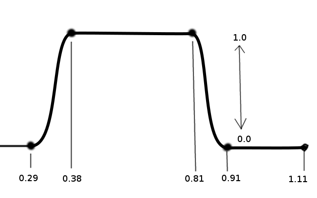

TheComet
How would you create a spline that does the following?
After I saw this topic: Splines in Urho I wanted to try and create a spline which describes a foot setting down and lifting off of the ground. Basically, something that looks like this:

I determined these key times by looking at a walk animation in the editor. I figure I could spline between Vector2’s, so I created the spline like this:
Spline sp;
sp.AddKnot(Variant(Vector2(0.29, 0.0))); // foot down
sp.AddKnot(Variant(Vector2(0.39, 1.0))); // foot on ground
sp.AddKnot(Variant(Vector2(0.81, 1.0))); // foot still on ground
sp.AddKnot(Variant(Vector2(0.91, 0.0))); // foot lift
Then I use this code to calculate the weight:
float norm = animState_.time / animState_.length;
float weight = sp.GetPoint(norm).GetVector2().y;
When I look at the weight value I’m getting something that looks like a sine wave and not the expected figure. What am I doing wrong?